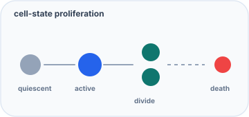
Generation-structured cell proliferation agents
Statechart ABM: quiescent cells activate, divide into local space and die. Useful for linking cell-proliferation research concepts to individual-based dynamics.
Open in Agent LabVisual guide
Teaching and benchmark models only. This page uses polished teaching visuals. Research figures are kept separate in the Research Hub. Personal research projects stay in the Research Hub with provenance, limitations and protected boundaries.
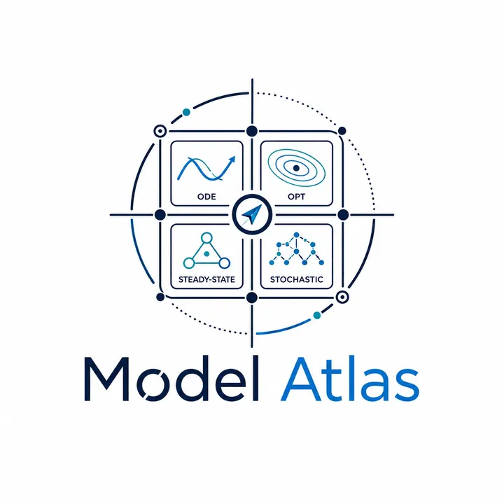
The Model Atlas is reserved for classical systems, teaching examples and benchmark problems. Chilperic’s research portfolio is kept separate, with project provenance, contributors, limitations, selected figures and protected simulation boundaries.
Agent-based modeling
Detailed scenario descriptions live here, not on the Agent Lab execution page. Open a model in Agent Lab to run it, then change approach, topology, update scheme, parameters or custom rule code.

Statechart ABM: quiescent cells activate, divide into local space and die. Useful for linking cell-proliferation research concepts to individual-based dynamics.
Open in Agent Lab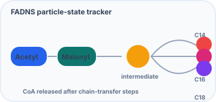
Tracks Acetyl-CoA, Malonyl-CoA, chain intermediates, C14/C16/C18 products and CoA release as a toy ABM analogy. This is not the calibrated FADNS ODE model; it is a teaching bridge between reaction events and agent-state transitions.
States: empty, Acetyl-CoA, Malonyl-CoA, chain intermediate, C14, C16, C18, CoA.
Open in Agent Lab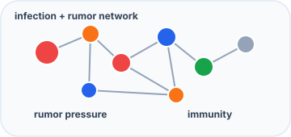
Rumors spread on contact networks and reduce effective herd immunity during an outbreak. Separates infection pressure from misinformation pressure.
Open in Agent Lab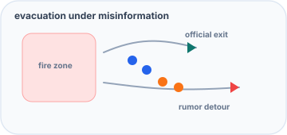
Fake route information spreads through local groups and redirects agents into congested paths. Useful for crisis communication and transport behavior prototypes.
Open in Agent Lab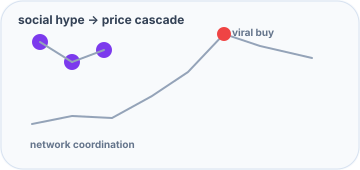
Viral hype and clustered investor influence create waves of buying and selling. A compact graph-contagion model for financial social dynamics.
Open in Agent Lab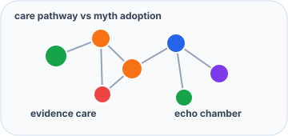
Health misinformation diffuses through support networks and can pull agents away from evidence-aligned care. Clinical correction is modeled as a competing process.
Open in Agent Lab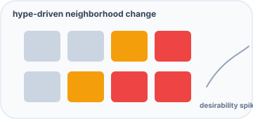
Geo-tagged influence raises desirability and displacement pressure. A spatial/social ABM for hype-driven neighborhood transitions.
Open in Agent Lab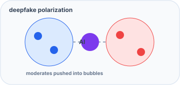
Polarizing synthetic content propagates through algorithmic feeds. Debunking and echo retention compete with polarization pressure.
Open in Agent Lab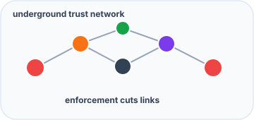
Poachers, smugglers and buyers coordinate through trust networks while enforcement removes active links or agents.
Open in Agent Lab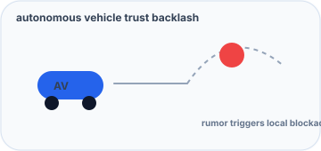
Rumors about AV incidents trigger local backlash and trust repair dynamics. Useful for urban technology adoption prototypes.
Open in Agent Lab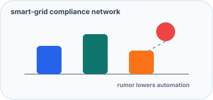
Privacy or health rumors reduce automation compliance. Technical correction and trust persistence control system-level resilience.
Open in Agent Lab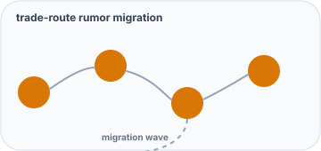
Trade-route networks carry cultural or apocalyptic rumors that can trigger migration and settlement abandonment ahead of climate stress.
Open in Agent Lab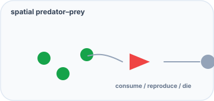
Spatial Lotka–Volterra intuition: prey reproduce locally, predators consume nearby prey and die without food.
Open in Agent Lab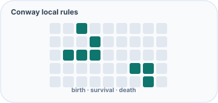
Classic local-rule cellular automaton. A minimal demonstration that simple rules can produce gliders, oscillators and complex-looking patterns.
Open in Agent Lab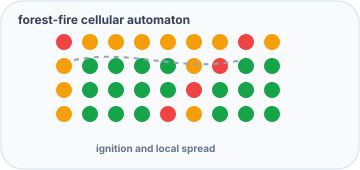
Local ignition, spread, ash and regrowth. A compact model for spatial threshold behavior and cascading events.
Open in Agent Lab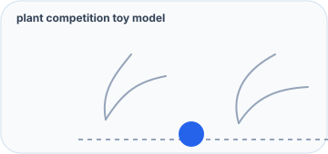
Individual plants compete for local space and carry a mutable trait. Useful for connecting ecological ABM to plant modeling ideas.
Open in Agent Lab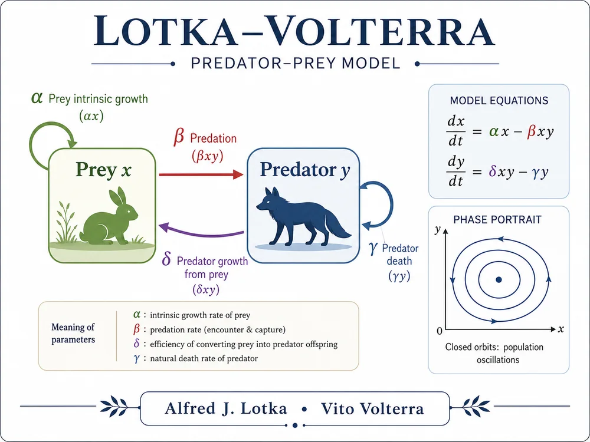
Core ODE
Predator–prey oscillator. The key lesson is how interaction terms create cycles in a phase portrait.
Variables: prey x; predator y
Try: increase predation β or predator death γ
Open in Workbench Open in lab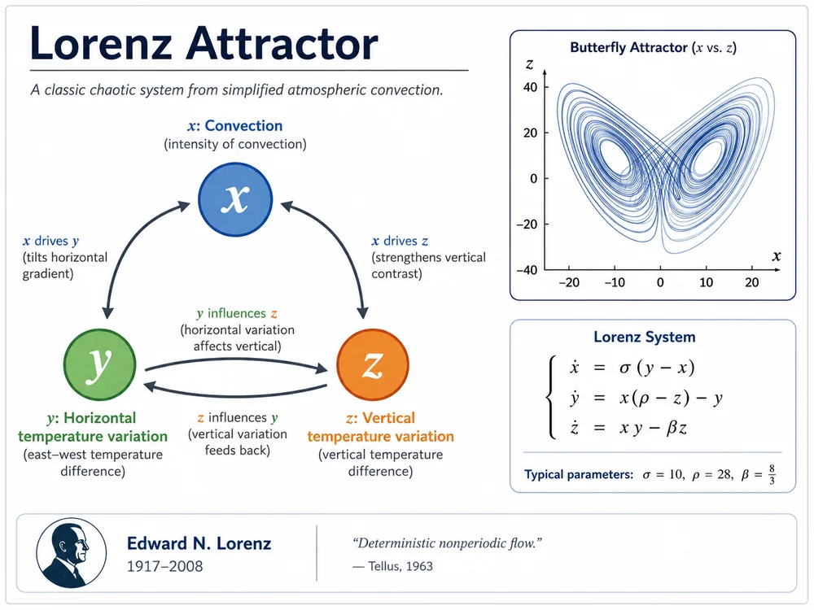
Core ODE
A canonical three-state chaotic system. Small changes in parameters or initial conditions can reshape long-term trajectories.
Variables: x, y, z convection/temperature modes
Try: change ρ near 24–30 and inspect 3D view
Open in Workbench Open in lab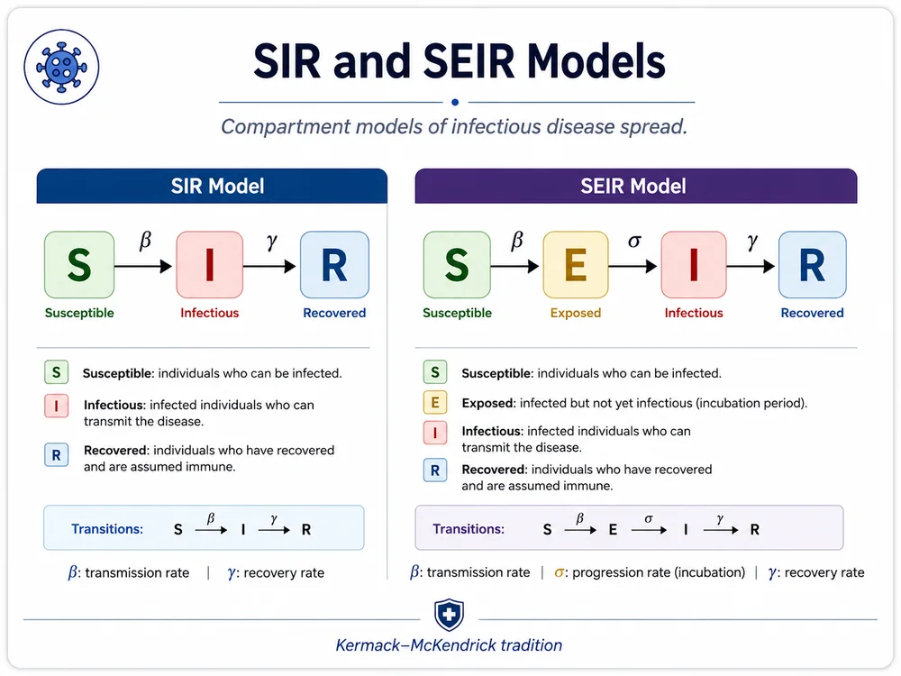
Core ODE
Compartmental epidemic model with susceptible, infected, and recovered states.
Variables: S, I, R
Try: increase β or γ and watch the infection peak
Open in Workbench Open in labCore ODE
Adds an exposed compartment before infectiousness, making incubation explicit.
Variables: S, E, I, R
Try: change σ to shorten or lengthen incubation
Open in Workbench Open in labStiff ODE benchmark
Classic stiff reaction system. It is included to show why explicit browser solvers have limits.
Variables: A, B, C
Try: export Python and compare Radau/BDF for reliability
Open in Workbench Open in lab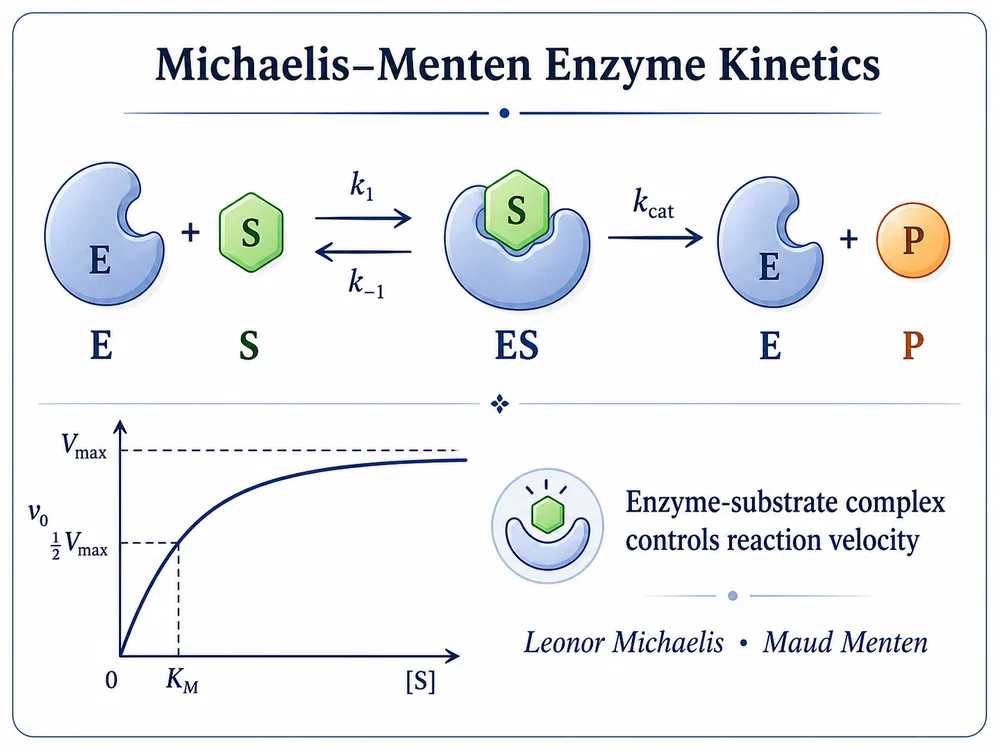
Core ODE
Minimal saturating conversion from substrate to product.
Variables: S, P
Try: change Km and vmax to see saturation
Open in Workbench Open in lab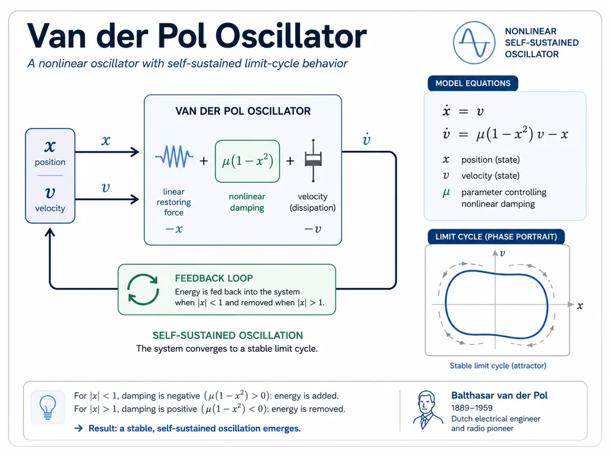
Core ODE
Self-sustained nonlinear oscillator with a limit cycle. Large μ creates stiffness.
Variables: x position; v velocity
Try: increase μ and compare phase portrait shapes
Open in Workbench Open in lab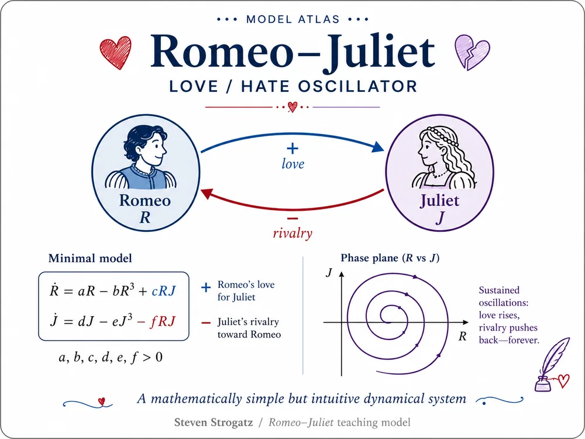
Teaching ODE
Two-person social oscillator. It is mathematically simple but intuitively memorable.
Variables: R Romeo; J Juliet
Try: change a and b to alter oscillation speed
Open in Workbench Open in lab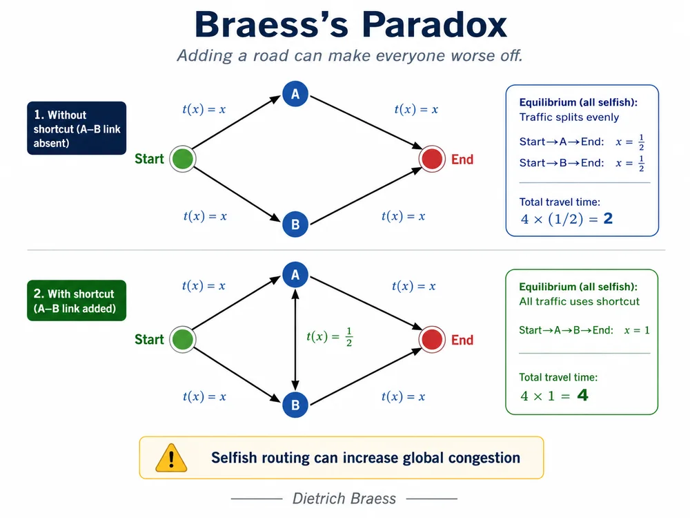
Paradox / network dynamics
Route-choice dynamics inspired by the paradox that extra capacity can worsen collective outcomes under selfish routing.
Variables: x fraction using a route
Try: compare route equilibrium with and without shortcut incentive
Open in Workbench Open in labParadox / structural dynamics
Non-conservative follower-force model where added stiffness or load can destabilize instead of stabilizing.
Variables: q1, q2, v1, v2
Try: increase follower load P and inspect oscillation growth
Open in Workbench Open in lab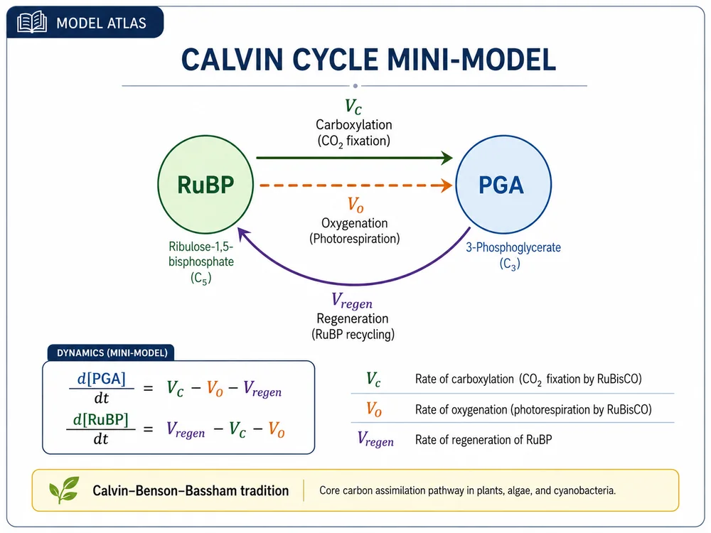
Photosynthesis ODE
Reduced two-pool photosynthesis model tracking PGA and RuBP with carboxylation, oxygenation, and regeneration.
Variables: PGA, RuBP
Try: increase regeneration Vregen or oxygenation Vo
Open in Workbench Open in labOptimization example
L1 regularization creates diamond-shaped constraints, so the optimum often lands exactly on an axis and sets coefficients to zero.
Variables: w1, w2 coefficients
Try: compare L1 sparsity geometry to smooth shrinkage
Open in Workbench Open in labOptimization / fitting example
More polynomial flexibility can make edge oscillations worse, not better.
Variables: polynomial coefficients
Try: inspect how high-degree fitting overreacts near boundaries
Open in Workbench Open in labDecision example
Reject the first 1/e of candidates as a benchmark, then choose the first candidate better than all previous.
Variables: candidate rank sequence
Try: compare the 37% rule with naive early selection
Open in Workbench Open stochastic labOptimization example
Two competing objectives. The useful output is the non-dominated frontier, not a single best point.
Variables: x, y design coordinates
Try: run optimization, then select Pareto frontier or feasibility map
Open in Workbench Open in labReal-world optimization / control
Allocate green times and offset under a finite cycle budget. The point is not traffic realism; it is to show constrained operational decision-making.
Variables: gNS, gEW, offset
Try: compare convergence, feasibility, and the objective landscape.
Open in Workbench Open in labReal-world optimization / environmental risk
Choose dose and buffer distance while trading efficacy against simplified aquatic and terrestrial exposure thresholds.
Variables: dose; buffer distance
Try: view the Pareto plot, then inspect which exposure constraint binds.
Open in Workbench Open in labReal-world optimization / operations
Select injection and production rates under capacity and water-cut constraints. Aggressive production improves revenue but increases the penalty surface.
Variables: qin; qprod
Try: switch between particle swarm and differential evolution.
Open in Workbench Open in labSteady-State / algebraic biology
Algebraic enzyme-balance form of saturating conversion. Use it to read off a steady reaction rate without integrating a time trajectory.
Variables: substrate concentration S; reaction rate v
Try: change Vmax and Km, solve, then export tidy CSV and Plotly JSON.
Open in Workbench Open in labSteady-State / bistability
Two mutually repressing variables can create three fixed points: two stable expression states separated by an unstable symmetric state.
Variables: x and y regulatory species; α production; n Hill coefficient
Try: start from different initial guesses and inspect the stability label and alternative equilibria.
Open in Workbench Open in labSteady-State / epidemic equilibrium
Find the non-transient equilibrium equations associated with an epidemic system and compare the algebraic solution with long-time ODE behavior.
Variables: S*, I*, R* equilibrium compartments
Try: change β and γ and check whether the endemic infected state remains feasible.
Open in Workbench Open in labReal-world steady state / environmental exposure
Steady parent and metabolite concentrations under repeated input, degradation, runoff, and leaching.
Variables: C_parent; C_met
Try: continue over dose or interval and check exposure sensitivity.
Open in Workbench Open in labReal-world steady state / environmental engineering
Ammonium and nitrifier biomass balances with dilution, Monod uptake, yield, and decay.
Variables: NH4; Xn
Try: continue over dilution rate D and watch washout risk.
Open in Workbench Open in labEvent simulation engine
Simulates reaction networks one event at a time: draw the waiting time, choose the next reaction, update the state.
Variables: integer molecule, cell, or compartment counts
Try: compare one stochastic path against the deterministic ODE mean field
Open in Workbench Open stochastic labBranching process
Each individual independently produces a random number of descendants. Mean growth above one does not guarantee survival.
Variables: population size Zₙ by generation
Try: vary offspring variance while keeping the same mean
Open in Workbench Open stochastic labRandom walk
A finite player repeatedly wins or loses one unit. In a fair game against an infinite bankroll, eventual ruin is almost sure.
Variables: capital Xₜ; win probability p
Try: increase initial capital and observe that risk is delayed, not removed
Open in Workbench Open stochastic labStochastic epidemic
Transmission and recovery are random events. Even when R₀ is above one, early random extinction remains possible.
Variables: S, I, R integer counts
Try: run many paths and inspect final-size distribution
Open in Workbench Open stochastic labStatistical physics
Balls randomly switch urns. The system approaches equilibrium yet can eventually return to an extreme initial state.
Variables: number of balls in urn A
Try: compare short-time relaxation with long-time recurrence
Open in Workbench Open stochastic labPopulation genetics
Allele frequencies change by random sampling. Neutral variants eventually fix or disappear without selection.
Variables: allele frequency pₙ; population size N
Try: reduce N and watch drift dominate faster
Open in Workbench Open stochastic labSDE / finance
Multiplicative noise separates ensemble average from typical trajectory. High volatility can make most paths disappointing while the mean rises.
Variables: asset or population size Xₜ
Try: increase volatility and compare median vs mean
Open in Workbench Open stochastic labParadox / random walks
Two losing games can combine into a winning process when switching changes the state distribution.
Variables: capital; modulo state
Try: alternate games instead of playing either one alone
Open in Workbench Open stochastic labNoise-assisted signal
Adding noise can improve detection of a weak periodic signal when a threshold system is tuned correctly.
Variables: signal, noise amplitude, threshold
Try: scan noise level and find the best signal response
Open in Workbench Open stochastic labBrownian motor
Thermal noise plus asymmetric switching can produce directed transport without a constant macroscopic force.
Variables: particle position; potential state
Try: switch the potential on/off and measure net velocity
Open in Workbench Open stochastic labLearning / control
Optimal decisions may favor an uncertain option over the current best-looking option because information has future value.
Variables: arm beliefs; reward history
Try: compare greedy choice against exploration-aware policies
Open in Workbench Open stochastic labOptimal stopping
Rejecting good early offers can be rational when waiting preserves the option of rare high-quality future draws.
Variables: offer sequence; stopping threshold
Try: change search cost and market variance
Open in Workbench Open stochastic labUse the atlas to choose a model, then open it in the matching lab. The labs are where you edit equations or objectives, run simulations or optimizations, configure figures, and export reproducible code.
Boundary: stochastic and paradox examples now open in the separate Stochastic Lab. It is a browser-scale teaching simulator; for calibrated fitting, stiff systems, large Monte Carlo, stochastic control, or publication analysis, export Python.